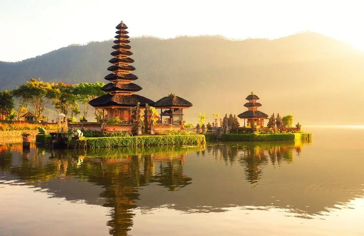

⭐ Terpopuler

📍 Provinsi Bali
Bali
Bali adalah provinsi yang terletak di bagian barat Kepulauan Nusa Tenggara, dikenal sebagai Pulau Dewata dan Pulau Seribu Pura. Ibu kotanya adalah Kota Denpasar, yang menawarkan perpaduan budaya Hindu yang kaya dan keindahan alam memukau.